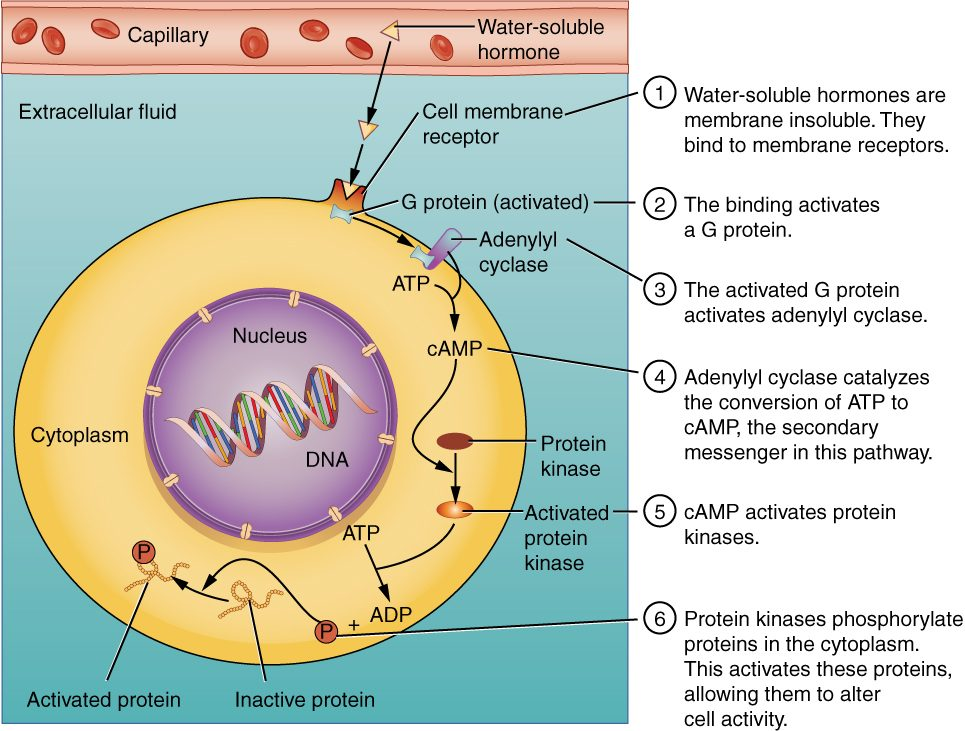
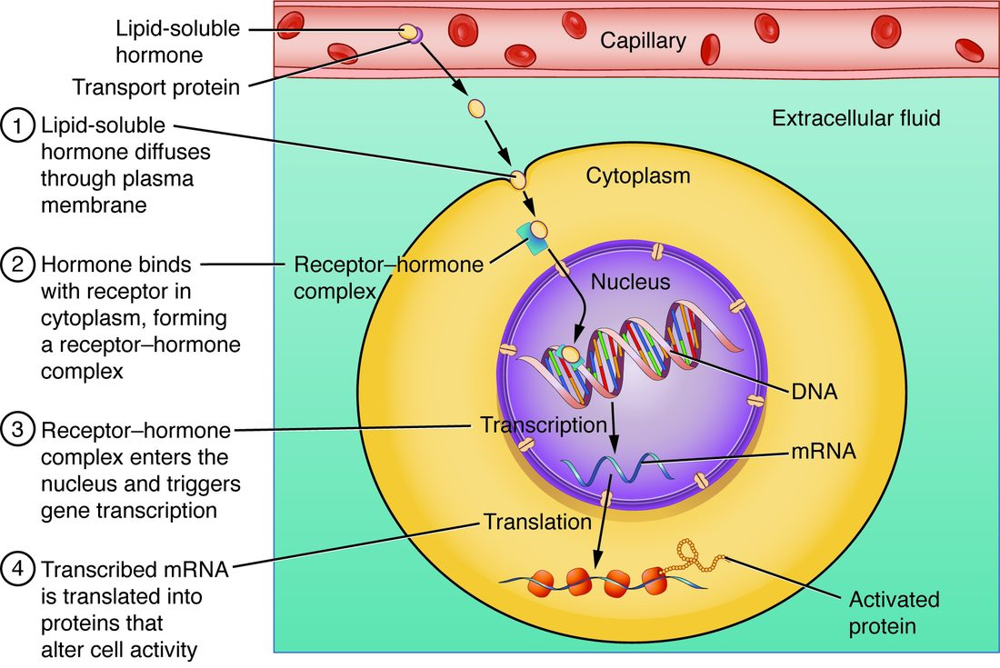

One molecule, one protein, one response
When your airways tighten and you use a reliever inhaler, the drug does not open your airways by itself. It lands on a particular protein on the surface of the smooth muscle cells that wrap your airways. That protein changes shape, sets off a chain of reactions inside the cell, and the muscle relaxes. Almost every signal between your cells works this way: a molecule from one place binds a protein somewhere else. This page covers cell signaling basics: receptor proteins, second messengers, and the difference between nervous and endocrine signaling.
This is a short, general version. Every system you study later uses it. Neurons use it at every synapse (the nervous chapter), nerves use it to start muscle contraction (the muscle chapter), the heart's rate is adjusted by it (the heart chapter), and hormones work through it (the endocrine chapter).
Chemical messengers and ligands
A chemical messenger (also called a signaling molecule) is a molecule that one cell releases to change the activity of another cell. Most leave the releasing cell by exocytosis, or diffuse straight out through its membrane.
A ligand (Latin ligare, to bind) is any molecule that binds specifically to a site on a protein. Every chemical messenger is a ligand for the protein it binds. So is a drug that binds the same protein, and so is the neurotransmitter that opens a ligand-gated channel, which you met in passive transport.
Receptor proteins
A receptor protein (Latin recipere, to receive) is a protein that binds a specific chemical messenger and, by changing shape, starts a response in the cell. A receptor protein for a hormone is often called a hormone receptor.
- Specificity. The binding site fits some ligands and not others, the way an enzyme's active site fits its substrate. That is why one messenger affects only some cells.
- Binding is reversible. The messenger binds and lets go. The more messenger around, the more receptor proteins are occupied at any moment, and the stronger the response.
- The receptor protein decides the response, not the messenger. The same neurotransmitter slows your heart rate and makes your gut's smooth muscle contract harder. Your heart cells and gut cells carry different receptor proteins for it, linked to different machinery inside.
Keep the two meanings of "receptor" apart. A receptor protein is a molecule that binds a messenger. A sensory receptor is a cell or nerve ending that detects a change, such as pressure on your skin. This page is about receptor proteins.
Target cells
After a meal, cells in your pancreas release a hormone into your blood. It reaches nearly every cell in your body within a minute. Yet only some cells respond. The ones that respond carry receptor proteins for that hormone.
A target cell is any cell with receptor proteins for a particular messenger. A cell without them ignores the messenger completely, however much of it is around.
How far the messenger travels
Messengers are grouped by the distance they travel from the cell that releases them to the target cell (Figure 1). The ending -crine comes from the Greek krinein, to separate or release.
Paracrine and autocrine signaling
Many messengers act only near where they are released. They are broken down or taken up within a short distance, so they never build up in the blood.
- Paracrine signaling (para- = beside): the messenger diffuses to neighboring cells. Example: when blood flow speeds up, the endothelium lining a blood vessel releases nitric oxide, a gas. It diffuses into the smooth muscle around the vessel and relaxes it, causing vasodilation. Nitroglycerin tablets, used for chest pain caused by narrowed heart arteries, work by releasing nitric oxide.
- Autocrine signaling (auto- = self): the messenger binds receptor proteins on the same cell that released it. Example: when certain white blood cells are activated, they release an interleukin that binds their own receptor proteins and drives them to divide.
A cytokine (cyto- = cell, -kine = movement) is one of a large family of small proteins that cells, especially white blood cells, use as paracrine and autocrine messengers. Interleukins (inter- = between, leuk- = white) are cytokines passed between white blood cells. A local signal like these is called paracrine or autocrine depending on who receives it; many messengers do both.
Eicosanoids
You twist your ankle. Within an hour it is swollen, red and throbbing. Much of that comes from eicosanoids (eicosa- = twenty): local lipid messengers made from a 20-carbon fatty acid that enzymes cut out of membrane phospholipids. Cells make them on demand and release them at once; they act on nearby cells and break down within seconds to minutes.
- Prostaglandins make pain-sensing nerve endings more sensitive, dilate small blood vessels, raise body temperature during illness, protect the stomach lining, and make the uterus contract.
- Leukotrienes (leuko- = white; first found in white blood cells) make airway smooth muscle contract and small vessels leak fluid.
Aspirin and ibuprofen block the enzyme that turns that fatty acid into prostaglandins. That is why they ease pain and swelling and lower a high temperature. It is also why they can irritate your stomach: they remove the prostaglandins that protect its lining.
Neurotransmitters and the synapse
A synapse (syn- = together, haptein = to fasten) is the junction where a neuron passes a signal to another cell: another neuron, a muscle fiber or a secreting cell. The sending side is presynaptic (pre- = before) and the receiving side is postsynaptic (post- = after). The two cells do not touch. A gap about 20 nanometers wide, the synaptic cleft, separates them (Figure 2).
A neurotransmitter is a chemical messenger that a neuron releases at a synapse. The basic sequence links the two previous topics:
- An action potential arrives at the axon terminal (the synaptic end bulb).
- The depolarization opens voltage-gated calcium channels there, and calcium ions flow in.
- Calcium triggers vesicles full of neurotransmitter to fuse with the membrane and release it by exocytosis.
- The neurotransmitter diffuses across the synaptic cleft in a fraction of a millisecond.
- It binds receptor proteins on the postsynaptic membrane. Often these are ligand-gated channels, which open and cause a graded potential in the postsynaptic cell.
- Enzymes, uptake into nearby cells, and diffusion clear the neurotransmitter, so the signal ends within milliseconds.

This is a short version. The nervous chapter covers synapses in full, including the main neurotransmitters and how a neuron adds up its inputs. The muscle chapter covers the synapse between a nerve and a skeletal muscle fiber.
Hormones
A hormone (Greek horman, to set in motion) is a chemical messenger released into the blood that acts on target cells elsewhere in the body. Hormones come from organs of the endocrine system and from scattered cells in other organs, such as the stomach and heart. Because blood reaches every tissue, a hormone meets almost every cell; only its target cells respond. The endocrine chapter covers the hormones one by one and how their release is controlled.
Water-soluble and lipid-soluble messengers
Where a messenger's receptor protein sits depends on one property you met in the chemistry primer: whether the messenger is hydrophilic or hydrophobic.
| Water-soluble messengers | Lipid-soluble messengers | |
|---|---|---|
| Chemistry | Hydrophilic; most are built from amino acids (peptides, proteins) | Hydrophobic; steroids made from cholesterol, and a few others |
| Crosses the plasma membrane? | No: blocked by the hydrophobic core of the bilayer | Yes: diffuses through the phospholipid bilayer |
| Where the receptor protein is | In the plasma membrane, binding site facing out | Inside the cell, in the cytosol or nucleus |
| How it travels in blood | Dissolved in the plasma | Mostly bound to proteins in the plasma that carry it |
| What it changes | Activity of proteins the cell already has | Which genes the cell expresses, so which proteins it makes |
| Speed of the response | Milliseconds to minutes | Hours |
| How long the effect lasts | Usually minutes | Hours to days |
Membrane receptor proteins and second messengers
A water-soluble messenger cannot enter the cell, so it passes its signal across the membrane. Some membrane receptor proteins are ion channels, the ligand-gated channels at many synapses. Many others work through a second messenger: a small molecule made inside the cell that carries the signal onward. The messenger outside is then called the first messenger.
The most common arrangement is a G-protein-coupled receptor. Follow the reliever inhaler from the start of this page (Figure 3):
- The drug (the first messenger) binds a receptor protein on an airway smooth muscle cell.
- The receptor protein changes shape and switches on a G protein on the inner face of the membrane. (G proteins are named for the guanine nucleotide, GTP, they bind while active.)
- The G protein switches on a membrane enzyme that converts ATP into cyclic AMP (cAMP), cyclic adenosine monophosphate. cAMP is the second messenger.
- cAMP switches on enzymes that attach phosphate groups to other proteins (phosphorylation). Phosphorylation changes those proteins' shape and activity.
- The changed proteins relax the muscle, and the airway widens.
- Other enzymes break cAMP down, so the response stops soon after the first messenger leaves.

Some G proteins switch enzymes off instead, and some use other second messengers, such as calcium ions released inside the cell. The endocrine chapter covers those variations.
Intracellular receptor proteins
Someone having a severe airway attack often gets a steroid medicine as well as the inhaler. The inhaler works in minutes. The steroid takes hours. The difference is where their receptor proteins are (Figure 4).
- The lipid-soluble steroid diffuses through the plasma membrane.
- It binds an intracellular receptor protein in the cytosol or nucleus. One found in the nucleus is often called a nuclear receptor.
- The messenger–receptor pair binds DNA and acts as a transcription factor, switching particular genes on or off.
- Changed transcription and translation change which proteins the cell makes.
Making new proteins takes hours, so these responses start slowly. The new proteins last, so the responses also persist for hours to days after the messenger is gone.

Signal amplification
Hormones work at astonishingly low concentrations, often less than a billionth of a mole per liter. Second messenger systems explain how. Each step multiplies the signal:
- One occupied receptor protein switches on many G proteins before the messenger lets go.
- Each membrane enzyme a G protein switches on makes many cAMP molecules.
- Each enzyme cAMP switches on phosphorylates many target proteins.
If each step multiplied by only 10 to 100, a single messenger molecule could change the activity of thousands to millions of molecules. That is signal amplification: the growth of a signal at each step of a pathway, so that a few messenger molecules produce a large response.
Up-regulation and down-regulation
Target cells are not fixed. They change how many receptor proteins they carry, which changes how strongly they respond to the same amount of messenger.
- Down-regulation: when a messenger stays high for a long time, target cells reduce their receptor proteins, often by pulling them into the cell by endocytosis and breaking them down. Example: with heavy, frequent use of a reliever inhaler, airway muscle cells remove some of the drug's receptor proteins, so each puff widens the airways less.
- Up-regulation: when a messenger stays low for a long time, target cells add receptor proteins. Example: if the nerve to a skeletal muscle is cut, its fibers insert receptor proteins for the nerve's neurotransmitter all over their surface and become far more sensitive to it.
So a cell's response depends on three things: how much messenger is present, how many receptor proteins it has, and what those receptor proteins are linked to inside.
Nervous versus endocrine signaling
Your body has two long-distance messaging systems. Both use chemical messengers and receptor proteins. They differ in how the messenger reaches its target.
| Nervous signaling | Endocrine signaling | |
|---|---|---|
| Messenger | Neurotransmitter | Hormone |
| How the signal travels | Action potentials along an axon, then a neurotransmitter across a synapse | Hormone carried in the blood |
| Which cells respond | Only the cell across each synapse | Every target cell the blood reaches |
| Speed of onset | Milliseconds | Seconds to hours |
| How long the effect lasts | Milliseconds; ends when the neurotransmitter is cleared | Minutes to days |
| Best suited to | Fast, precise actions, such as moving a finger | Slow, widespread, lasting changes, such as growth and metabolism |
| Example | A nerve signal making a skeletal muscle contract | A pancreatic hormone that makes many tissues take up glucose |
The line is not sharp. Some neurons release their messenger into the blood, so it acts as a hormone. And some molecules serve as a neurotransmitter at synapses and as a hormone when released into the blood.
Where this returns
- Muscle chapter: the synapse between a nerve and a skeletal muscle fiber, and how its neurotransmitter starts contraction.
- Nervous chapter: synapses in full, the main neurotransmitters, and how receptor proteins on neurons excite or inhibit them.
- Heart chapter: how nerve messengers and hormones speed up and slow down your heart through receptor proteins and second messengers.
- Endocrine chapter: each hormone, its receptor proteins, and how the second messenger and intracellular pathways work in detail.